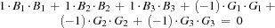

4.2 Example: Family
defined constraints
This example illustrates the use of defined constraints. A defined constraint is a procedure
{DefinedConstraint X1 ... Xn} posting constraints on the variables X1, ... Xn. The reasons for introducing defined constraints are more or less the same as for introducing defined procedures in ordinary programming.
The script for the example will employ the procedures FD.sum, FD.sumC, and FD.sumCN, which create propagators for linear and nonlinear summation constraints.
Problem Specification
Maria and Clara are both heads of households, and both families have three boys and three girls. Neither family includes any children closer in age than one year, and all children are under age 10. The youngest child in Maria's family is a girl, and Clara has just given birth to a little girl.
In each family, the sum of the ages of the boys equals the sum of the ages of the girls, and the sum of the squares of the ages of the boys equals the sum of the the squares of ages of the girls. The sum of the ages of all children is 60.
What are the ages of the children in each family?
Model
We model a family as a record
Name(boys:[B1B2B3] girls:[G1G2G3])
where the variables B1, B2 and B3 stand for the ages of the boys in descending order (i. e., B3 is the age of the youngest boy in the family), and the variables G1, G2 and G3 stand for the ages of the girls, also in descending order. This representation of a family avoids possible symmetries. The constraints that must hold for a family F with name N will be posted by the defined constraint {IsFamily N F}.
A solution is a pair consisting of Maria's and Clara's family.
Distribution Stratgey
We distribute on the list of the ages of the children of the two families following a first-fail strategy. The strategy splits the domain of the selected variable and tries the lower part of the domain first.
Script
proc {Family Root}<Definition of IsFamily>
Maria = {IsFamily maria}
Clara = {IsFamily clara}
AgeOfMariasYoungestGirl = {Nth Maria.girls 3}
AgeOfClarasYoungestGirl = {Nth Clara.girls 3}
Ages = {FoldR [Clara.girls Clara.boys Maria.girls Maria.boys]
Append nil}
in
Root = Maria#Clara
{ForAll Maria.boys proc {$ A} A >: AgeOfMariasYoungestGirl end}
AgeOfClarasYoungestGirl = 0
{FD.sum Ages '=:' 60}
{FD.distribute split Ages}
end
Figure 4.2: A script for the Family Puzzle.
The script in Figure 4.2 introduces two defined constraints. The defined constraint
F={IsFamilyName}
imposes constraints saying that F is the representation of a family with name Name (see Figure 4.3). The defined constraint
L={AgeList} imposes constraints saying that L is a list of three integers between 0 and 9 appearing in descending order (see Figure 4.3).
- <Definition of AgeList>=
proc {AgeList L}
{FD.list 3 0#9 L}
{Nth L 1} >: {Nth L 2}
{Nth L 2} >: {Nth L 3}
end
- <Definition of IsFamily>=
fun {IsFamily Name}
Coeffs = [1 1 1 ~1 ~1 ~1]
BoysAges = {AgeList}
GirlsAges = {AgeList}
Ages = {Append BoysAges GirlsAges}
in
{FD.distinct Ages}
{FD.sumC Coeffs Ages '=:' 0}
{FD.sumCN Coeffs {Map Ages fun {$ A} [A A] end} '=:' 0}
Name(boys:BoysAges girls:GirlsAges)
end
Figure 4.3: Defined constraints for the Family Puzzle.
The statement
{FD.sumC Coeffs Ages '=:' 0}creates a propagator for the constraint

saying that the sum of the ages of the boys equals the sum of the ages of the girls. The statement
{FD.sumCN Coeffs {Map Ages fun {$ A} [A A] end} '=:' 0}creates a propagator for the constraint

saying that the sum of the squares of the ages of the boys equals the sum of the squares of the ages of the girls. The statement
{FD.sum Ages '=:' 60} creates a propagator for the constraint saying that the sum of the ages of all kids equals 60.